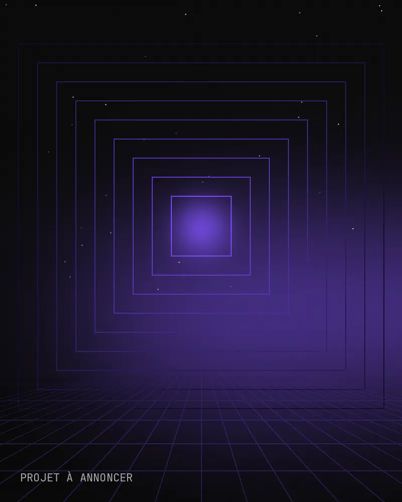

FLX-02 · À venir NEON CALANQUES

À venir
La nuit appartient aux audacieux
Dans une Marseille futuriste baignée de néons, chaque course transforme la ville. Enchaînez les mouvements, apprivoisez des créatures de lumière et remontez jusqu’à la source d’un signal venu de la mer.
- Studio
- Flexarion (Aix-en-Provence, France)
- Genre
- Action roguelite
- Plateformes
- PC, consoles
- Statut
- À venir